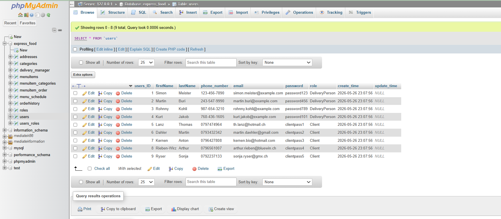
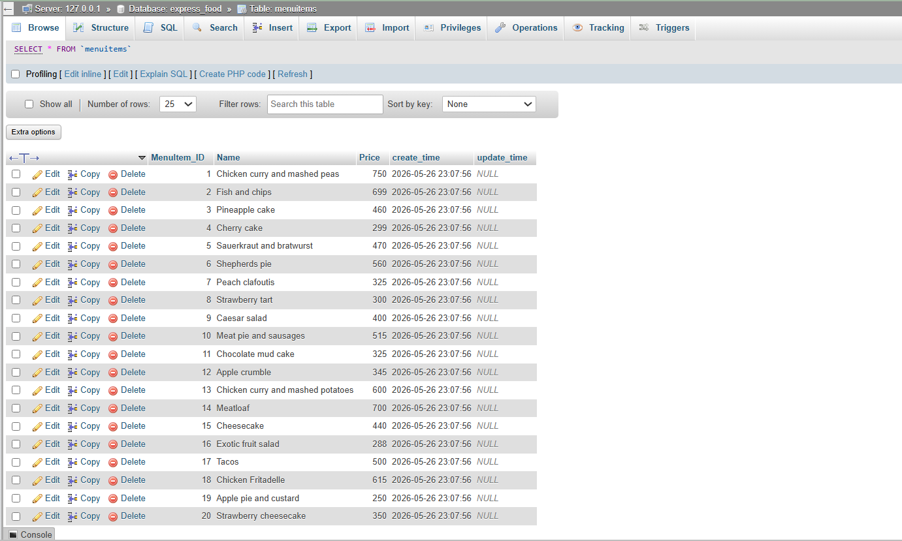

Ce projet a été réalisé dans le cadre de la formation
Développeur Web. Il consiste à concevoir la solution
technique d’une application de restauration en ligne nommée
Express Food.
Chaque jour, Express Food prépare deux plats et deux desserts dans son
QG avec l’aide de chefs expérimentés. Ces plats sont ensuite
conditionnés à froid puis transmis à des livreurs à domicile.
Lorsqu’un client passe commande depuis l’application, un livreur
disponible est missionné afin de livrer la commande en moins de vingt
minutes.
Le travail demandé portait principalement sur l’analyse du besoin, la
modélisation UML de l’application, la conception du modèle de données,
la création du schéma de base de données MySQL et l’insertion de
premières données fictives.
Objectifs du projet
Analyser le besoin métier
Étude du cahier des charges Express Food
Identification des acteurs de l’application
Identification des données nécessaires au fonctionnement du
service
Modéliser l’application avec UML
Réalisation de diagrammes de cas d’utilisation
Concevoir une base de données relationnelle
Technologies utilisées
UML
MySQL Workbench
SQL
GitHub
Compétences mobilisées
Bloc 1 – Support et mise à disposition de services informatiques
Gérer le patrimoine informatique
Organisation des fichiers du projet UML et SQL
Utilisation de GitHub pour conserver les livrables
Travailler en mode projet
Production de livrables UML et SQL
Création d’un script SQL exploitable
Insertion de données fictives pour tester la base
Organiser son développement professionnel
Approfondissement des notions de modélisation UML
Renforcement des compétences en conception de base de données
Bloc 2 – Conception et développement d’applications
Concevoir et développer une solution applicative
Analyse du besoin exprimé dans le cahier des charges
Conception du diagramme de classes
Gérer les données
Création du schéma de base de données MySQL
Insertion de données fictives
Documents du projet
Vous pouvez consulter ci-dessous les principaux livrables du projet
Express Food : le dépôt GitHub, le diagramme UML et le script SQL.
Cette capture présente les différentes tables créées dans la base de
données Express Food.

Liste des tables créées dans la base de données express_food.
Données de la table menu_items
Cette capture montre les données fictives insérées dans la table
menu_items. Elle permet de représenter les différents
plats disponibles dans l’application.

Exemples de plats enregistrés dans la table menu_items.